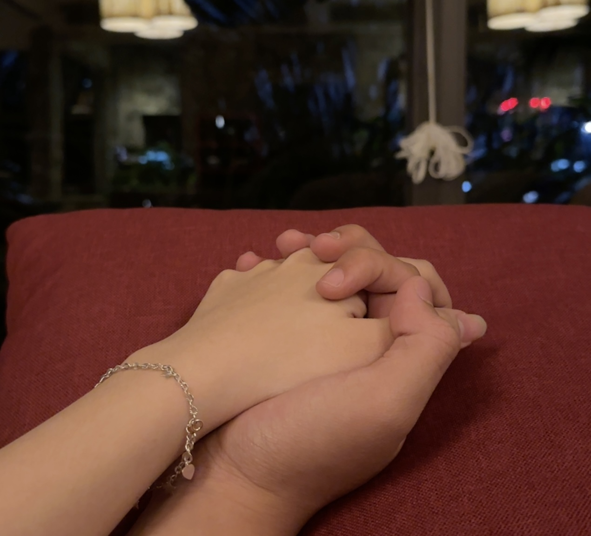
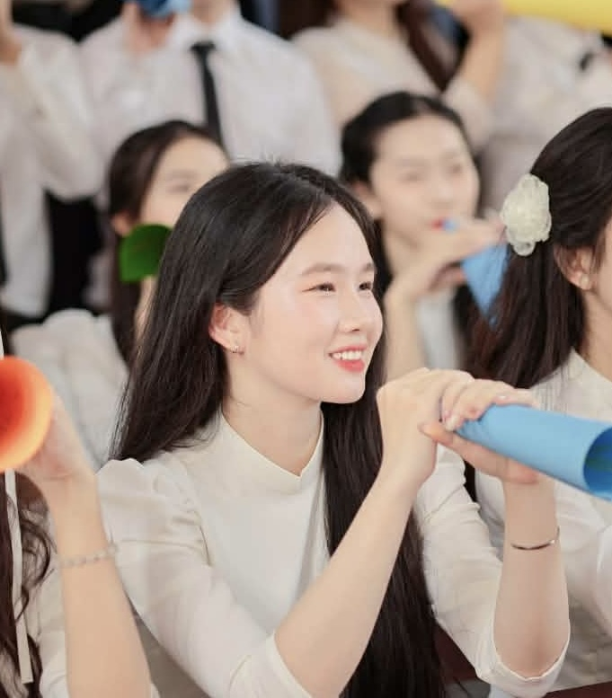
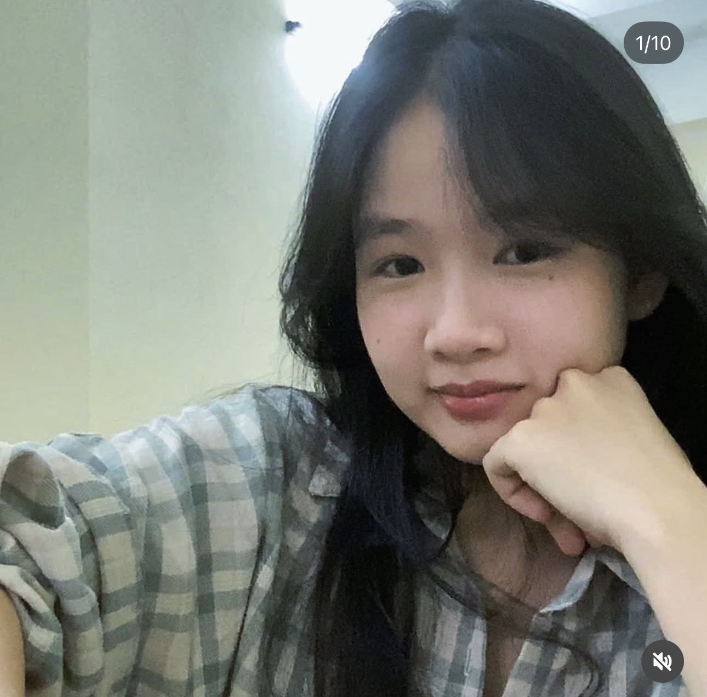
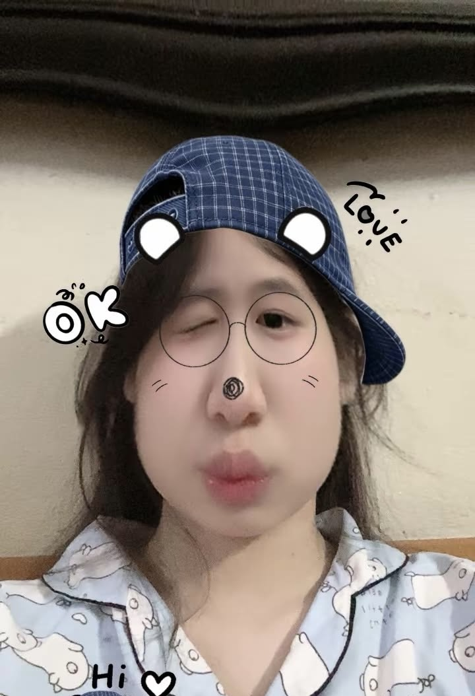
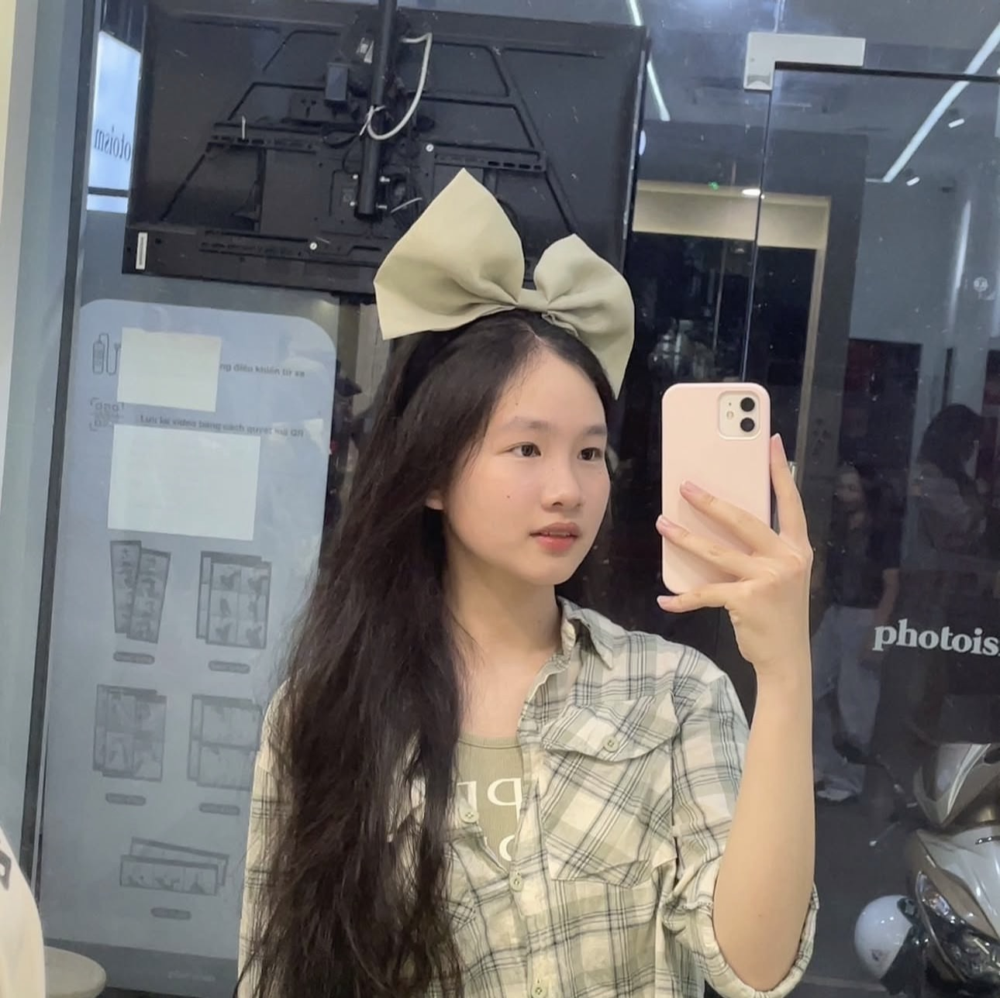
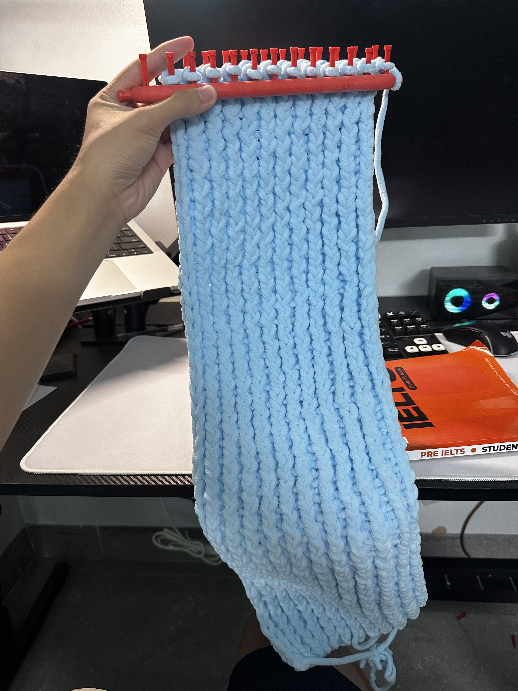
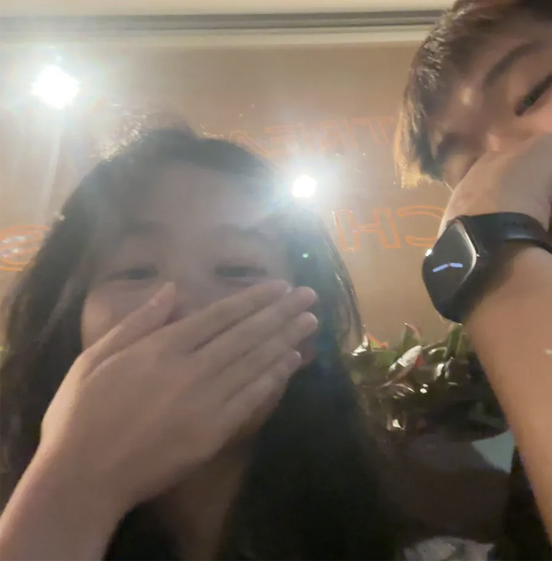
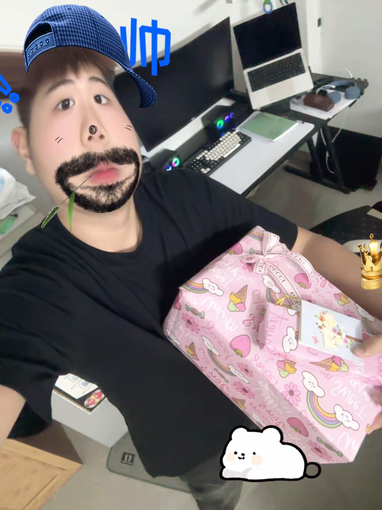

♡01 · Khoảnh khắc nhỏ
Tay không to nhưng lại có thể che chở cả thế giới.
chạm nhẹ vào màn hình để bắt đầu ✦
Còn cậu là vì sao đẹp nhất trong vũ trụ của tớ.
chạm để những vì sao kể tiếp ✦
Dành tặng cho cô gái đáng yêu nhất thế giới!




chạm để đọc một điều tớ muốn gửi tới cậu ↓
Những khoảnh khắc nhỏ, nhưng ở lại trong tim rất lâu.

♡01 · Khoảnh khắc nhỏ
Tay không to nhưng lại có thể che chở cả thế giới.

✦02 · Chăm sóc
Làm cậu vui cũng chính là tự làm tớ thấy hài lòng.

♡03 · Bên nhau
Từng giây phút gặp nhau đều trở nên đáng nhớ, khả năng cao là do thiếu hơi.

✧04 · Dịp đặc biệt
Ý là lúc nào cũng có quà nên tự nhiên dịp đặc biệt quà nó phải đặc biệt hơn ấy chứ hì hì hì.
chạm để mở món quà tiếp theo ↓
Một lá thư nhỏ gửi tới cô gái của tớ
Hôm nay là ngày 20/10, và tớ muốn dành cho cậu một điều gì đó không chỉ gói gọn trong vài câu chúc ngắn ngủi. Tớ đã nghĩ rất lâu xem nên viết gì, bởi có những cảm xúc khi ở trong lòng thì tưởng như thật rõ ràng, nhưng đến lúc đặt bút xuống lại chẳng biết bắt đầu từ đâu. Cuối cùng, tớ nghĩ mình cứ viết thật lòng là được. Đây là một lá thư nhỏ, dành riêng cho cậu, để cậu có thể đọc chậm rãi vào bất cứ lúc nào cậu muốn.
Trước hết, chúc cô gái của tớ có một ngày 20/10 thật dịu dàng. Tớ mong hôm nay cậu sẽ có được nhiều nụ cười và những điều khiến trái tim cậu vui lên. Nhưng tớ cũng mong rằng niềm vui ấy sẽ không chỉ ở lại trong một ngày. Cậu xứng đáng được yêu thương, được trân trọng và được đối xử bằng sự tử tế trong cả những ngày bình thường nhất, kể cả những ngày chẳng có dịp gì đặc biệt để mọi người nhắc cậu rằng cậu quan trọng đến nhường nào.
Tớ thích những điều rất nhỏ ở cậu. Là cách cậu kể một câu chuyện chẳng có gì to tát nhưng vẫn khiến tớ muốn nghe đến cuối; cách cậu vui vì một điều xinh xắn; hay một khoảnh khắc cậu vô tình nói ra điều gì đó khiến tớ bật cười một mình. Đôi khi, chính những điều bình thường ấy lại ở lại trong tớ lâu hơn cả những khoảnh khắc thật lớn lao. Cậu có thể không nhận ra, nhưng sự hiện diện của cậu đã khiến nhiều ngày của tớ trở nên đáng nhớ hơn.
Tớ không nghĩ tình cảm chỉ được tạo nên từ những lời nói đẹp. Với tớ, nó còn nằm trong việc nhớ đến nhau giữa một ngày bận rộn, hỏi han nhau sau một ngày dài, kiên nhẫn lắng nghe khi người kia cần được sẻ chia và cùng tìm cách giải quyết những điều chưa vui. Tớ muốn mình có thể làm được những điều ấy cho cậu và cũng muốn cậu có thể làm được những điều ấy cho tớ, không phải để chứng minh điều gì, mà vì tớ thật sự muốn cậu cảm thấy rằng bên cạnh cậu có một người quan tâm đến những gì cậu đang trải qua.
Tớ biết mình không phải lúc nào cũng hoàn hảo. Có khi tớ vụng về, có khi chưa hiểu hết điều cậu muốn nói, có khi nghĩ rằng mình đã thể hiện đủ nhưng cậu lại chưa cảm nhận được. Nếu có lúc như vậy, tớ mong chúng mình có thể nói với nhau bằng sự chân thành và dịu dàng. Tớ muốn học cách lắng nghe cậu tốt hơn, hiểu cậu nhiều hơn và sửa những điều mình có thể sửa. Tớ không muốn chỉ nói những lời thật hay trong một lá thư, mà còn muốn để những ngày sau này trả lời thay cho tớ bằng hành động.
Tớ mong cậu luôn giữ được những điều làm nên chính cậu: những ước mơ, sở thích, cá tính, sự tò mò và cả những nét riêng mà đôi khi cậu nghĩ chẳng có gì đặc biệt. Cậu không cần phải trở thành một phiên bản khác để được yêu quý. Cậu cũng không cần lúc nào cũng mạnh mẽ, vui vẻ hay tỏ ra rằng mọi thứ đều ổn. Những ngày cậu tự tin, tớ mong được cùng cậu vui; những ngày cậu mệt mỏi, tớ mong có thể ngồi cạnh cậu, nghe cậu kể và để cậu được nghỉ ngơi mà không phải cố gắng tỏ ra ổn hơn thực tế.
Nếu có hôm nào cậu thấy mình làm chưa đủ tốt, mong cậu đừng vội phủ nhận tất cả những điều cậu đã cố gắng. Ai cũng có những ngày chậm chạp, những lúc hoang mang và những việc phải thử đi thử lại mới làm được. Cậu có quyền mắc lỗi, có quyền thay đổi suy nghĩ và có quyền dành thời gian để tìm ra điều mình thật sự muốn. Tớ hy vọng cậu sẽ luôn đối xử với bản thân bằng sự bao dung mà cậu vẫn dành cho những người cậu thương. Cậu cũng xứng đáng nhận được sự dịu dàng từ chính mình.
Tớ thích khi chúng mình có thể chia sẻ với nhau cả chuyện vui lẫn những điều chẳng dễ kể. Tớ muốn được biết điều gì làm cậu hào hứng, điều gì khiến cậu lo lắng, những dự định cậu đang ấp ủ và cả những chuyện nhỏ nhặt xảy ra trong ngày. Không phải vì tớ cần biết mọi thứ, mà vì tớ muốn hiểu thế giới của cậu thêm một chút mỗi ngày. Và tớ cũng mong mình có thể kể cho cậu nghe về thế giới của tớ, để chúng mình không chỉ ở cạnh nhau trong những khoảnh khắc vui vẻ mà còn có thể đồng hành trong những ngày không dễ dàng.
Có thể chúng mình sẽ có những lúc không đồng ý, hiểu nhầm hoặc vô tình làm người kia buồn. Tớ không mong mọi chuyện lúc nào cũng suôn sẻ, bởi chẳng có mối quan hệ nào chỉ toàn những ngày nắng đẹp. Điều tớ mong là khi có vấn đề, chúng mình đừng vội xem nhau là đối thủ. Hãy cùng nhìn về phía vấn đề, NÓI RÕ ĐIỀU MÌNH CẢM THẤY VÀ CHO NHAU CƠ HỘI ĐỂ GIẢI THÍCH. Tớ tin sự chân thành không có nghĩa là không bao giờ mắc lỗi; chân thành còn là dám nhận lỗi, biết xin lỗi và thật sự cố gắng để lần sau làm tốt hơn.
Cảm ơn cậu vì đã bước vào cuộc sống của tớ và mang đến những cảm xúc thật đặc biệt. Cảm ơn cậu vì những lần dành thời gian cho tớ, vì những câu chuyện cậu kể, vì những khoảnh khắc chúng mình cùng cười và cả vì những điều cậu có thể đã làm mà không hề biết rằng chúng quan trọng với tớ đến thế. Tớ trân trọng từng kỷ niệm mà chúng mình đã có, dù đó là một ngày đáng nhớ hay chỉ là vài phút trò chuyện bình thường. Khi gom những điều nhỏ bé ấy lại, tớ nhận ra chúng đã tạo thành một phần rất đẹp trong những ngày của mình.
Ngày 20/10, tớ muốn chúc cậu không chỉ xinh đẹp theo cách người khác nhìn thấy, mà còn luôn cảm thấy bình yên trong lòng. Chúc cậu có đủ sức khỏe để theo đuổi điều mình thích, đủ tự tin để bước qua những thử thách và đủ kiên nhẫn với những ước mơ cần thời gian. Chúc cậu luôn gặp được những người biết tôn trọng cậu, những cơ hội phù hợp với cậu và những niềm vui đến từ cả các điều lớn lao lẫn những chuyện rất bình thường. Mong những điều tốt đẹp tìm đến cậu nhiều hơn, nhưng nếu có ngày chưa được như ý, mong cậu vẫn nhớ rằng mình có thể bắt đầu lại.
Tớ cũng chúc cậu luôn có những góc nhỏ dành riêng cho bản thân: một bài hát khiến cậu thấy dễ chịu, một món ăn cậu thích, một cuốn phim muốn xem, một nơi muốn ghé qua hay đơn giản là một buổi tối được nghỉ ngơi thật thoải mái. Tớ mong cậu không phải lúc nào cũng chạy theo lịch trình hoặc cố làm hài lòng tất cả mọi người. Đôi khi, chỉ cần dừng lại một chút, hít thở thật sâu và làm điều khiến mình vui cũng đã là một cách chăm sóc bản thân rồi. Cậu không cần phải làm mọi thứ thật xuất sắc mới xứng đáng được nghỉ ngơi.
Nếu có thể gửi cậu một điều qua lá thư này, thì tớ muốn cậu biết rằng tình cảm của tớ không chỉ dành cho hình ảnh rạng rỡ nhất của cậu. Tớ yêu cả những lúc cậu vui vẻ lẫn lúc cậu trầm ngâm, cả những ngày cậu có thật nhiều năng lượng lẫn những hôm cậu chỉ muốn chậm lại. Tớ muốn hiểu con người thật của cậu, với những suy nghĩ, cảm xúc và thay đổi theo thời gian. Tớ không thể biết trước mọi chuyện sau này, nhưng tớ có thể lựa chọn cách mình cư xử hôm nay: tôn trọng cậu, quan tâm đến cậu và luôn cố gắng để tình cảm này trở thành một điều ấm áp trong cuộc sống của cả hai.
Tớ hy vọng trong những ngày bận rộn, chúng mình vẫn nhớ dành cho nhau một chút thời gian. Không nhất thiết phải là những cuộc trò chuyện dài hay những món quà thật đặc biệt. Đôi khi, một lời hỏi han đúng lúc, một câu chuyện ngắn trước khi ngủ hoặc một tin nhắn kể rằng hôm nay có chuyện gì vui cũng đủ làm ngày dài dịu lại. Tớ muốn chúng mình tích góp những khoảnh khắc như thế, chậm rãi thôi, để tình cảm được nuôi dưỡng bằng sự quan tâm thật sự chứ không chỉ bằng những dịp kỷ niệm trên lịch.
Nếu một ngày cậu đọc lại những dòng này, có thể tâm trạng của cậu đã khác hôm nay, và cuộc sống của chúng mình cũng sẽ có thêm nhiều thay đổi. Tớ mong khi ấy cậu vẫn có thể mỉm cười với lá thư này. Có thể vài câu chữ sẽ hơi ngốc nghếch, có thể cách tớ diễn đạt còn vụng về, nhưng mọi điều ở đây đều được viết với mong muốn làm cậu vui. Tớ không cần lá thư phải thật hoàn hảo; tớ chỉ mong nó khiến cậu cảm nhận được rằng đã có một người ngồi xuống, nghĩ về cậu thật lâu và muốn dành tặng cậu một điều chỉ riêng cậu có.
Vậy nên, hôm nay hãy nhận lấy lời chúc này cùng tất cả sự dịu dàng mà tớ muốn gửi đến cậu. Mong cậu ăn ngon, ngủ đủ, cười nhiều, gặp được những điều dễ thương và có thêm thật nhiều lý do để yêu cuộc sống của mình. Mong những lúc nhìn lại chặng đường đã qua, cậu có thể tự hào vì bản thân đã cố gắng đến thế nào. Và mong trong những ngày sắp tới, cậu vẫn sẽ tiếp tục khám phá, trưởng thành, làm những điều mình yêu thích và giữ lại trong tim những niềm vui nhỏ bé nhưng chân thật.
Cuối cùng, cảm ơn cậu vì đã là cậu. Cảm ơn vì đã cho tớ cơ hội được quan tâm, được lắng nghe và được góp một phần nhỏ vào những câu chuyện của cậu. Tớ mong món quà này có thể khiến cậu vui một chút, giống như cách cậu đã làm cho nhiều ngày của tớ trở nên đặc biệt mà có lẽ cậu chẳng hề hay biết. Chúc cậu một ngày 20/10 thật ngọt ngào, một tháng mười thật ấm áp và thật nhiều ngày bình yên ở phía trước. Đọc đến đây rồi thì nhớ mỉm cười một cái nhé, vì nụ cười của cậu là một trong những điều tớ rất thích.
Một chút tinh tế được tớ cài cắm ở góc dưới bên phải màn hình. Tớ yêu cậu rất nhiều!
Anh Tuan ♡
chạm để mở thư ♡
Trước khi món quà này khép lại...
Nếu được chọn một điều để giữ lại giữa thế giới rộng lớn này, anh vẫn mong đó là những ngày có em — những ngày rất bình thường thôi, nhưng đủ khiến anh mỉm cười khi nhớ lại.
Chắc chắn em sẽ được yêu thương và không được quên rằng đối với anh, em rất đặc biệt. ♡
chạm để đến lời kết ♡
chạm để xem lại từ đầu ↺